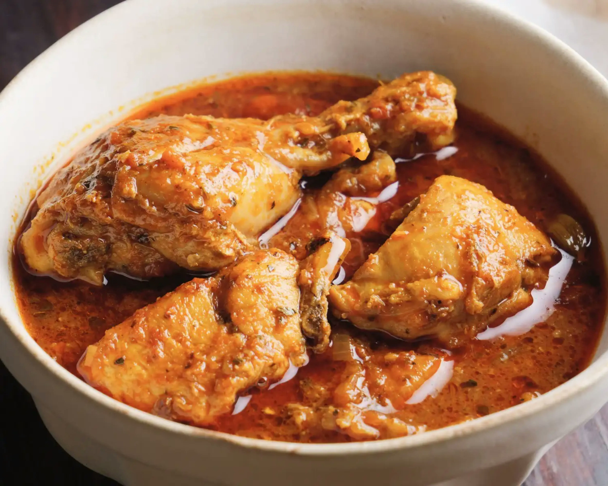

Our story
Our Story – Made with Love, Served with Passion
At Mama Pili's Kitchen, we believe that good food brings people together. Our passion comes from the joy of preparing delicious meals that make every customer feel at home.
Inspired by the richness of Kenyan food culture and the comfort of homemade cooking, Mama Pili's Kitchen is all about serving satisfying meals made with care, quality ingredients and a passion for great taste.
Whether you are stopping by for a quick meal, ordering lunch or sharing food with family and friends, we want every experience to feel special.
Our goal is simple: to serve delicious food, make our customers happy and bring people together, one meal at a time.
Explore our menuFrom our kitchen to your table
Good Food, Great Taste!
Enjoy Kenyan-inspired meals, freshly prepared dishes, satisfying lunch options and favourites for sharing.
Order Now